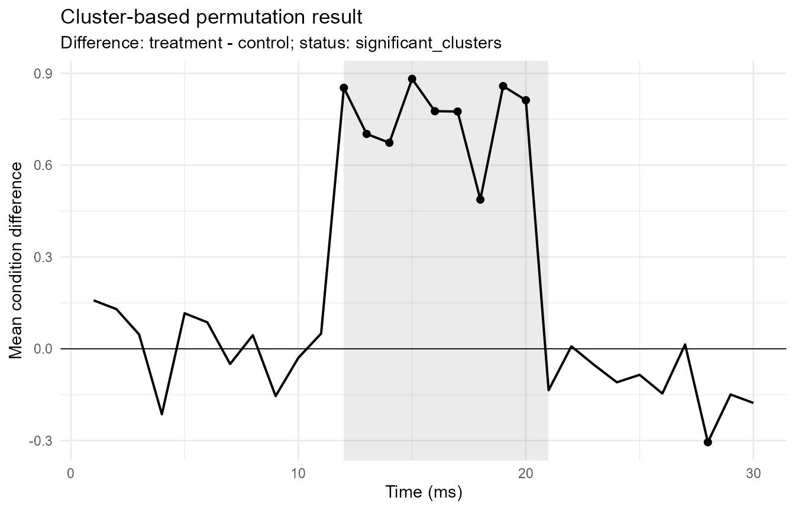

Cluster-permutation time-course workflow
Source:vignettes/articles/cluster-permutation-workflow.Rmd
cluster-permutation-workflow.RmdThis article gives a compact example of the conservative
cluster-permutation workflow in gp3tools. The workflow is
intended for two-condition, within-subject, one-dimensional time-course
data. It is suitable for cautious screening of time-contiguous effects,
not for exact onset or offset claims.
Simulated example data
set.seed(123)
raw <- simulate_gazepoint_cluster_timecourse_data(
n_subjects = 12,
n_time_bins = 30,
conditions = c("control", "treatment"),
effect_start = 12,
effect_end = 20,
effect_size = 0.7,
seed = 123
)
head(raw)
#> subject condition time_bin outcome
#> 1 S001 control 1 0.023352640
#> 2 S002 control 1 0.006406593
#> 3 S003 control 1 0.276462794
#> 4 S004 control 1 0.767104526
#> 5 S005 control 1 0.269113265
#> 6 S006 control 1 -0.240940613Prepare the time-course grid
prepare_gazepoint_timecourse_test_data() converts a
long-format data set into the internal column contract expected by
run_gazepoint_cluster_permutation().
prepared <- prepare_gazepoint_timecourse_test_data(
raw,
subject_col = "subject",
condition_col = "condition",
time_col = "time_bin",
outcome_col = "outcome",
condition_order = c("control", "treatment")
)
head(prepared)
#> .gp3_cluster_subject .gp3_cluster_condition .gp3_cluster_time_bin
#> 1 S001 control 1
#> 2 S001 treatment 1
#> 3 S001 control 2
#> 4 S001 treatment 2
#> 5 S001 control 3
#> 6 S001 treatment 3
#> .gp3_cluster_outcome .gp3_cluster_status
#> 1 0.02335264 ok
#> 2 -0.38697165 ok
#> 3 0.11443486 ok
#> 4 0.20485385 ok
#> 5 0.07188089 ok
#> 6 0.32232050 okAudit the grid
Before running a cluster-permutation workflow, check whether the data grid is complete, paired, and compatible with the validated two-condition workflow.
grid_audit <- audit_gazepoint_timecourse_grid(prepared)
grid_audit$grid_summary
#> n_input_rows n_valid_rows n_subjects n_conditions n_time_bins
#> 1 720 720 12 2 30
#> n_expected_cells n_observed_cells n_missing_cells n_duplicate_cells
#> 1 720 720 0 0
#> n_unpaired_subject_time_cells
#> 1 0
grid_audit$readiness
#> check passed
#> 1 exactly_two_conditions TRUE
#> 2 no_missing_grid_cells TRUE
#> 3 no_duplicate_cells TRUE
#> 4 no_unpaired_subject_time_cells TRUE
#> 5 numeric_outcome TRUE
design_diagnostic <- diagnose_gazepoint_cluster_design(prepared)
design_diagnostic
#> diagnostic value
#> 1 conditions 2
#> 2 paired_time_grid 0
#> 3 duplicates 0
#> 4 sample_size 12
#> 5 time_bins 30
#> 6 validated_scope two-condition within-subject one-dimensional time course
#> passed
#> 1 TRUE
#> 2 TRUE
#> 3 TRUE
#> 4 TRUE
#> 5 TRUE
#> 6 TRUE
#> interpretation
#> 1 The implemented inferential engine is for exactly two conditions.
#> 2 Each subject-time cell should have both conditions represented.
#> 3 Duplicate cells should be aggregated before permutation testing.
#> 4 Permutation stability depends on the number of paired units.
#> 5 Cluster formation requires an ordered one-dimensional time grid.
#> 6 ANOVA, mixed-model, TFCE, multidimensional, covariate-adjusted, and parallel engines are intentionally outside this validated scope.Run the cluster-permutation workflow
For a fast documentation example, this article uses a small number of permutations. Real analyses should use a larger number and report the settings.
cluster_result <- run_gazepoint_cluster_permutation(
prepared,
condition_order = c("control", "treatment"),
n_permutations = 99,
cluster_threshold = 1.5,
min_time_bins = 2,
seed = 123
)
names(cluster_result)
#> [1] "timecourse" "clusters"
#> [3] "permutation_distribution" "data"
#> [5] "settings" "model_status"
#> [7] "n_subjects" "n_time_bins"
#> [9] "warning"Summarise clusters
cluster_summary <- summarize_gazepoint_time_clusters(cluster_result)
cluster_summary
#> cluster_id cluster_direction start_time_bin end_time_bin n_time_bins
#> 1 1 positive 12 20 9
#> cluster_statistic p_value cluster_significant cluster_summary_status
#> 1 42.47172 0.01 TRUE okPlot the cluster result
plot_gazepoint_cluster_permutation(
cluster_result,
plot_type = "difference",
significant_only = FALSE
)
Cautious report text
report_gazepoint_cluster_permutation() returns a compact
report object. The generated wording is deliberately cautious: detected
ranges are treated as cluster-level time intervals, not as exact
effect-onset or effect-offset estimates.
cluster_report <- report_gazepoint_cluster_permutation(cluster_result)
cluster_report$report_text
#> [1] "The cluster-permutation workflow identified 1 cluster(s) below alpha = 0.05 over the following time-bin range(s): 12-20 (p = 0.01) . These ranges should be reported as cluster-level time intervals, not as precise effect-onset or effect-offset estimates."Threshold sensitivity
Cluster-level results can depend on the cluster-forming threshold. A compact sensitivity table helps document whether the broad pattern is stable across reasonable threshold choices.
threshold_sensitivity <- run_gazepoint_cluster_threshold_sensitivity(
prepared,
thresholds = c(1.25, 1.5, 1.75),
condition_order = c("control", "treatment"),
n_permutations = 49,
min_time_bins = 2,
seed = 123
)
threshold_sensitivity$summary
#> cluster_threshold n_clusters n_significant_clusters min_p_value
#> 1 1.25 1 1 0.02
#> 2 1.50 1 1 0.02
#> 3 1.75 1 1 0.02External export helpers
The external export helpers prepare long-format files and README notes for possible continuation in specialist tools. They do not run or validate the external analyses.
external_dir <- tempfile("gp3_cluster_export_")
external_files <- export_gazepoint_mne_cluster_input(
prepared,
outdir = external_dir
)
external_files
#> file
#> 1 /tmp/Rtmp4q94iS/gp3_cluster_export_37ff4f21c61b/mne_cluster_long_input.csv
#> 2 /tmp/Rtmp4q94iS/gp3_cluster_export_37ff4f21c61b/README_mne_cluster_input.txt
#> file_type export_status
#> 1 mne_long_csv ok
#> 2 readme okGuardrails for unsupported extensions
Some advanced method names are available as explicit guardrails. They intentionally stop with explanatory messages rather than silently supporting methods outside the validated scope.
try(run_gazepoint_tfce(), silent = TRUE)